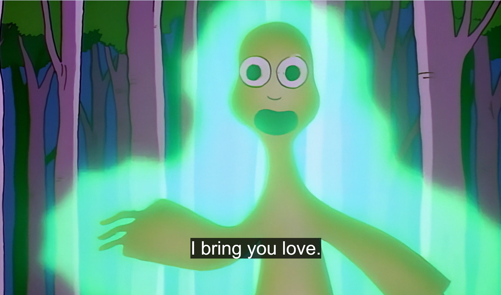
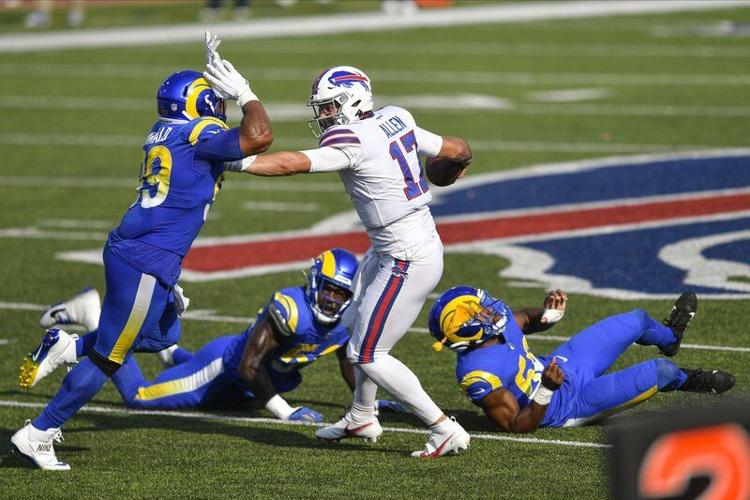
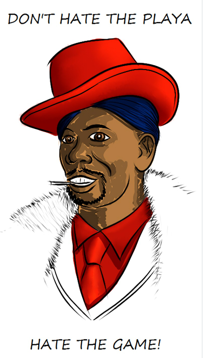
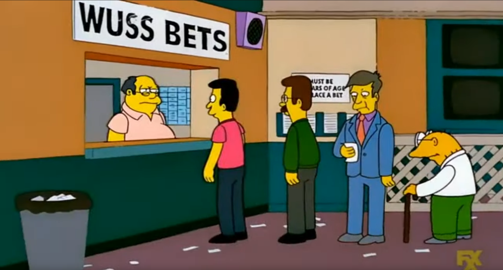

Welcome to Week 10 of Fantasy Fucks power rankings!!
This guest post is sponsored by your favorite last-placed manager, Neil*
*Also known as - Unpaid Bills, Mike Honcho, Fat Milano, Tre’Davious Black, The Giant Midget, and “get out of my yard you creep!”
Matchup of the Week
*️⃣ 8======D (6-3) v. Hurts Donut (4-5) *️⃣ I’ve got Joel in here for the 2nd week straight, with him hoping to quell two contenders, in back to back weeks - which would put him right at the fabled .500 clip in the standings. Considering how close together the whole league is right now, it’s tough to pick THE proper banger matchup…but I really like this one between Joel “no bet” Hernandez and PJ “my shaft is ready to grow” Hardcastle”. Not necessarily because of the current standings....but because of the implication.
What to Watch: After week 9, nobody has less than 3…or more than 6 wins. That feels like some decent parity. But as we all know, fantasy football doesn’t follow the laws of parity…it follows the laws of chaos.

If all goes according to plan, we could have every team sitting between 4 and 6 wins after week 10…now THAT’S parity!Waiver Wire Wizard
🧙🏻♂️ Joel - CJ Stroud - $6 Joel needed a waiver QB for Hurts’ bye week, and I think he got the best of the bunch with rookie CJ Stroud.
Honorable Mentions Snake and PJ - Seahawks and Ravens defense ($5 and $4, respectively) PJ wanted the Seahawks defense, but apparently not enough to properly bid on them. Instead, he decided to put his money on the team that held Seattle to 3 points last Sunday. It will likely work out for him fantasy wise. “Top-spot-Tony” is grinning at this prospect.
Andy - $0 - D’onta Foreman Big free pickup for Candy here, this Foreman might just see the project through to the finish line.
Cries for Help
😭 Joel - $3 - Josh Dobbs “Oops lol”
Week Ten Power Rankings

👑 JA MONTG (5-4, W3, PF 1214.42) ⬆️
Waiver Budget: $30 The former Slutler is on an absolute tear - 3 wins in a row, most Points For with the #1 QB and the #1 RB doing the dirty work, Tony’s team is looking poised for a deep run. I don’t think we’ll be seeing this man naked in a tuxedo vest anytime soon. Oh and how about that - he just so happens to have Travis Kelce getting healthy on his bye week as well. Tony’s team is built for the long haul, let’s see how it plays out.
2. Tua Williams One Kupp (6-3, L1, PF 1205.04) ⬇️
Waiver Budget: $12 There’s no other way to put it, but Seif’s team is absolutely stacked. Etienne looks like the real deal, both fantasy and otherwise…I know cause I’ve had to watch several Jaguars games this year through no fault of my own. Add in Ja’marr Chase, Cooper Kupp, DJ Moore, and the standout rookie TE LaPorta? These pass catchers are the real deal. Seif dropping one spot is mostly a product of “what have you done for me lately?”
3. Diggin That Bijan Mustard (6-3, W2, PF 1179.72) 🔂
Waiver Budget: $35 I’m really not sure what to make of CJ’s team, other than I think it’s really fucking solid....bordering on, day I say....really good? Diggs has been a monster and shows no sign of slowing down on that front. Trading for Kamara could be a league winning play, he’s averaging more catches than some top end WRs, and in PPR that RB production is obviously untouchable.
4. Exotic Engrams (4-5, L1, PF 1106.52) ⬆️
Waiver Budget: $29 Ranking numbers 4,5,6 was really tough. Each squad has a lot of boom or bust prospects, and obviously Snake’s team is no exception. Coming off of a tough loss against Pangy, Jake still has some key players that are poised to potentially win any given week on their own (Ekeler, Mahomes, the kid-beater Tyreek Hill – among an otherwise stacked bench). Will Pollard come good eventually? Dionte Johnson very much looks like he could be the clear cut #1 in Pittsburgh’s middling offense.
5. 8======D (6-3, L2, PF 1034.06) ⬇️
Waiver Budget: $17 PJ’s team always scares the shit out of me, that’s just how it be. He’s a quality 6-3, which I’m sure he’s pleased with, but he could very well be 3-6 at the same time. Taysom Hill was a really good pickup, I think he’ll be in the mix for every red zone play the Saints have for the rest of the year. St. Brown is a stud, and K Walker and Breece Hall are kind’ve ultimate RB wildcards. I could see that duo scoring 55, or 15 combined. PJ takes a fall to #5 here, but I’ve got two words that are likely to jump him higher once healthy....
Justin. Jefferson.
6. Hurts Donut (4-5, W1, PF 1068.48) ⬆️
Waiver Budget: $19 Despite trading away his hometown Kelce, I don’t believe that Joel is one pathetic loser. Puka has had a rough couple weeks, and with the Rams QB situation who knows how that’s going to end up - but Joel’s made some good moves to be/stay in the mix. Call me crazy, but I think Olave could be a top 5 WR for the 2nd half of this season, and you expect Josh Jacobs to get his. He’s also got 2 Buffalo Bills in his lineup so....you expect them to probably choke.
7. Sweet Brotha Numpsay (4-5, W1, PF 1023.04) ⬆️
Waiver Budget: $28 Kyren Williams about to come back into the mix....this man could propel Pangy into the stratosphere, or do absolutely nothing....there’s no way to know. But what is known, is AJ fucking Brown being the boss that he is. Add in Davante and Deebo, and that right there is one hell of a WR corps. Granted, they all need to be healthy and actually perform, which is easier said than done…but despite some nonsense, they all still got it.
Oh yeah, did I mention a secret weapon by the name of DeVon Achane? If he comes back healthy to the same Miami game script, watch out league.
8. Unpaid Bills (3-6, W1, PF 1036.26) ⬆️⬆️
Waiver Budget: $12 Compact Disc Lamb and the cast-away Rachaad White have been carrying this team the last few weeks, we’ll see if that productivity can continue. At 3-6, I need some more wins, and I need them fast. Will Lamar Jackson keep rip’n’runnin’? Will Saquon be healthy enough to produce in maybe the worst offense in the league? Dalton Kincaid is the TE of the future. Not just for the Bills, but for all of fantasy.
9. Justin and the Blazettes (4-5, L1, PF 1016.20) ⬇️⬇️⬇️
Waiver Budget: $0 Justin Herbert will carry this team to the promise land. Maybe. Who really knows? I like the trade for Mandrews a lot, he should still be getting a ton of targets, especially in the RZ. Maybe Dalton Schultz is a possible flex too? The running back situation for Andy’s team leaves a lot to be desired, and while I certainly wouldn’t count any of them out, they’re not the horses I’d lay my money down on. There’s still a lot of season left, but I fully expect to see the two Turners battling for the Slutler title (with myself very likely joining them).
💩 Love Heem (3-6, L4, PF 913.52) ⬇️
Waiver Budget: $20 Kris, your team is not very good. It’s pretty rough. Adam Thielen is carrying you, and in 2023 that is not ideal. With that said, you do have some boom-or-bust players for the playoffs, I could definitely see Tucker hitting three 60 yarders in one game. Maybe Gabe Davis replicates his 4 TD game against the Chiefs? We all can only hope.
“Each day I come in with a positive attitude, trying to get better.”
- Stefon Diggs
So many horses....can’t I just bet that all the horses have a fun time?
